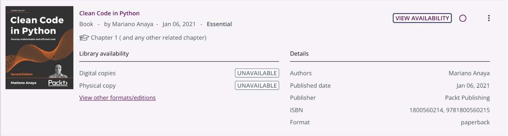

Unit 9: Quality Management Strategy
In unit 9, we learned about the variety of ways through which software quality may be determined to have been achieved. We examined effective quality management of a software and explored a variety of metrics by which software quality may be measured. When testing a software development and preparing for delivery of software to a client, there will be a need to demonstrate that the functional and non-functional requirements of the system have been fulfilled.
Required Reading
- Ebert, C. et al. (2023) 'Code Quality Analysis', IEEE Software, 40(5), pp. 20–28.
- Vable, A., Diehl, S. F. and Glymour, M. (2021) 'Code Review as a Simple Trick to Enhance Reproducibility, Accelerate Learning, and Improve the Quality of Your Team’s Research', American Journal of Epidemiology, 190(10), pp. 2172–2177.
- Féris, A. et al. (2021) 'Enhancing Software Development through Project‐based Learning and the Quality of Planning', R & D Management, 51(5), pp. 447–467.
- Geetika, M. et al. (2023) 'The AGP Model for Risk Management in Agile I.T. Projects', Journal of Risk and Financial Management', 16(2), pp. 1–12.
Unit Work
Improving Code Quality
This unit's only formative task required us to refer to Anaya (2021), and apply at least three of the strategies presented at the source to improve the quality of some Python code.
Unfortunately, the resource is unavailable in both physical and digital form from the University of Essex library:
This was particularly frustrating, and as a result there was no way of knowing what strategies were included in the text that could have improved code quality. Therefore, the task could not be completed. I will attempt to find a copy and return to complete this task at a later date.